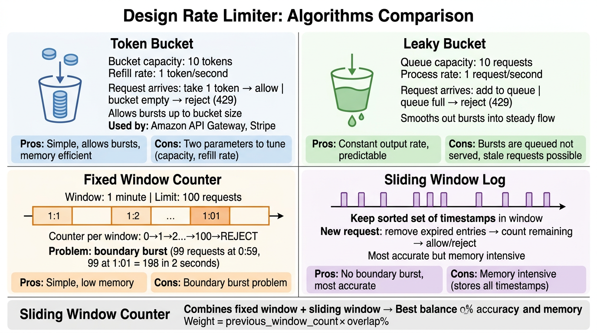
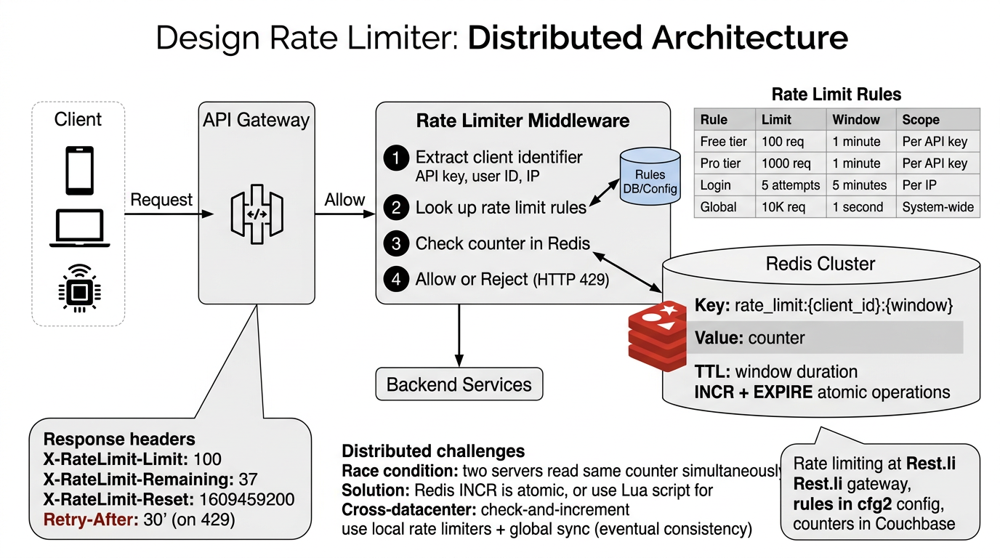

A deep dive into rate limiting algorithms, distributed architectures with Redis, race condition handling, and real-world API throttling strategies.
A rate limiter controls the number of requests a client can send to a server within a defined time window. When the threshold is exceeded, excess requests are throttled — typically returning HTTP 429 Too Many Requests.
429) with retry infoThe rate limiter can live at different layers in the request path. Each has trade-offs:
| Placement | Pros | Cons | Best For |
|---|---|---|---|
| Client-side | Reduces unnecessary network traffic | Easily bypassed; unreliable | Mobile SDK throttling |
| API Gateway | Centralized; uniform enforcement; offloads services | Single point of failure; coarse-grained | Most production systems |
| Middleware / Sidecar | Per-service granularity; service mesh integration | Each service needs its own config | Microservice architectures |
| Application Layer | Fine-grained; business-logic-aware rules | Duplicated logic across services | Custom per-endpoint limits |
LinkedIn uses API gateway-level rate limiting (via the Rest.li framework and Frontdoor proxy) combined with per-service middleware for fine-grained control. The gateway handles global IP-based throttling, while individual services enforce user-tier-based limits.
Five major algorithms dominate rate limiter design. Each balances accuracy, memory, and implementation complexity differently.

The token bucket is the most widely used algorithm. Tokens are added at rate r tokens/second, up to a maximum bucket size b. Each request removes one token.
class TokenBucket:
def __init__(self, capacity, refill_rate):
self.capacity = capacity
self.tokens = capacity
self.refill_rate = refill_rate # tokens per second
self.last_refill = time.time()
def allow_request(self):
self._refill()
if self.tokens >= 1:
self.tokens -= 1
return True
return False
def _refill(self):
now = time.time()
elapsed = now - self.last_refill
self.tokens = min(self.capacity,
self.tokens + elapsed * self.refill_rate)
self.last_refill = now
Memory: O(1) per bucket — only stores tokens and last_refill.
Used by: Amazon API Gateway, Stripe, LinkedIn Rest.li
Functionally similar to a token bucket, but implemented as a FIFO queue. Requests are processed at a fixed rate. If the queue is full, new requests are dropped.
| Property | Token Bucket | Leaky Bucket |
|---|---|---|
| Burst handling | Allows bursts up to capacity | Smooths all output to fixed rate |
| Implementation | Counter + timestamp | FIFO queue |
| Use case | APIs needing burst tolerance | Traffic shaping, network QoS |
Divides time into fixed windows (e.g., every 60 seconds). A counter tracks requests in the current window and resets at each boundary.
The Boundary Problem: A user could send the maximum number of requests at the end of window N and again at the start of window N+1 — effectively doubling their rate across a short burst that spans the boundary.
# Example: limit = 100 req/min # At 12:00:59 → user sends 100 requests (allowed, counter = 100) # At 12:01:00 → counter resets to 0 # At 12:01:01 → user sends 100 requests (allowed, counter = 100) # Result: 200 requests in 2 seconds!
Maintains a sorted set of timestamps for each request. On every new request, remove all entries older than now - window_size, then check if count exceeds the limit.
# Redis implementation
def is_allowed(user_id, limit, window_secs):
key = f"rate:{user_id}"
now = time.time()
cutoff = now - window_secs
pipe = redis.pipeline()
pipe.zremrangebyscore(key, 0, cutoff) # Remove old entries
pipe.zadd(key, {str(now): now}) # Add current request
pipe.zcard(key) # Count entries
pipe.expire(key, window_secs)
_, _, count, _ = pipe.execute()
return count <= limit
Accuracy: Perfect — no boundary issues. Memory: O(n) per user, where n = number of requests in the window. Expensive for high-volume users.
The best trade-off for most systems. Uses counters from the current and previous fixed windows, weighted by how far into the current window we are.
# Formula: # estimated_count = prev_window_count × overlap_ratio + current_window_count # # Example: window = 60s, limit = 100 # Previous window (12:00-12:01): 84 requests # Current window (12:01-12:02): 36 requests # Current time: 12:01:15 → 75% of prev window overlaps # # estimated = 84 × 0.75 + 36 = 63 + 36 = 99 → ALLOWED (under 100)
Memory: O(1) per user — only two counters. Accuracy: ~99.7% according to Cloudflare’s analysis.
| Algorithm | Memory | Accuracy | Burst Control | Complexity |
|---|---|---|---|---|
| Token Bucket | O(1) | Good | Allows controlled bursts | Low |
| Leaky Bucket | O(1) | Good | Smooths all bursts | Low |
| Fixed Window | O(1) | Poor at boundaries | None | Very Low |
| Sliding Window Log | O(n) | Perfect | Precise | Medium |
| Sliding Window Counter | O(1) | ~99.7% | Good | Low |
In a multi-server environment, a centralized data store (typically Redis) is required so that all API servers enforce a shared counter. Without this, each server would track limits independently, letting users exceed limits by distributing requests across servers.

INCR + EXPIRE command to Redis. If the returned counter exceeds the limit, the request is rejected with 429.429 response is returned with rate limit headers.Redis is the de facto choice for distributed rate limiting due to its single-threaded model and sub-millisecond latency. The core operation is atomic increment with expiry:
-- Lua script for atomic rate limiting in Redis
local key = KEYS[1]
local limit = tonumber(ARGV[1])
local window = tonumber(ARGV[2])
local current = redis.call('INCR', key)
if current == 1 then
redis.call('EXPIRE', key, window)
end
if current > limit then
return 0 -- rejected
else
return 1 -- allowed
end
Using a Lua script ensures atomicity — INCR and EXPIRE execute as a single operation, preventing the key from existing without a TTL (which would cause a memory leak).
A naive implementation that reads the counter, checks the limit, and then writes is vulnerable to race conditions:
# WRONG - Race condition between GET and SET
count = redis.get(key) # Thread A reads 99
# Thread B reads 99
if count < limit:
redis.incr(key) # Thread A writes 100 → allowed
# Thread B writes 101 → should have been denied!
Solutions:
ZADD/ZCARD for sliding window log with implicit atomicityStandard rate limit headers inform clients of their usage and remaining quota:
| Header | Description | Example |
|---|---|---|
X-RateLimit-Limit |
Maximum requests allowed per window | 100 |
X-RateLimit-Remaining |
Requests remaining in current window | 37 |
X-RateLimit-Reset |
Unix timestamp when window resets | 1672531260 |
Retry-After |
Seconds to wait before retrying (on 429) | 23 |
HTTP/1.1 429 Too Many Requests
X-RateLimit-Limit: 100
X-RateLimit-Remaining: 0
X-RateLimit-Reset: 1672531260
Retry-After: 23
Content-Type: application/json
{"error": "rate_limit_exceeded", "message": "Too many requests. Retry after 23 seconds."}
LinkedIn’s rate limiting architecture maps directly to this design:
| Component | LinkedIn Implementation |
|---|---|
| API Gateway | Frontdoor Proxy — handles global rate limiting at the edge, IP-based throttling, and DDoS protection |
| Per-Service Limiter | Rest.li framework — built-in rate limiting middleware with per-endpoint configuration and caller-based quotas |
| Counter Store | Couchbase / Venice — distributed counters with sub-ms latency; some services use in-process counters with gossip-based synchronization |
| Rules Engine | D2 service registry + cfg2 config management — dynamic rule updates without deployment |
| Algorithm | Token bucket (primary) with sliding window for certain public APIs |
| Multi-Tier Limits | Different quotas for internal services vs external API partners vs public apps (LinkedIn Developer Platform) |
Risk: Single point of failure; coarse rules may over-throttle
Risk: Inconsistent policies; harder to get global view
| Type | Behavior | Use Case |
|---|---|---|
| Hard Limit | Request is immediately rejected with 429 |
External APIs, untrusted clients, security-sensitive endpoints |
| Soft Limit | Request is allowed but flagged; alert is triggered; may be degraded | Internal services, gradual rollout, observability |
| Elastic Limit | Temporary burst allowed up to N% over quota; hard stop after that | Handling legitimate traffic spikes without user disruption |
Production systems typically enforce limits at multiple granularities simultaneously:
A request must pass all tiers to be allowed. This prevents abuse at every level — a valid API key can’t be used to DDoS a single endpoint.
If the rate limiter’s backing store is unavailable, you have two choices:
If Redis is down, allow all requests. Prioritize availability over protection.
Best for: internal services, non-critical APIs where downtime is worse than over-serving.
If Redis is down, reject all requests. Prioritize safety over availability.
Best for: payment APIs, auth endpoints, security-critical paths.
Hybrid approach: Fall back to local in-memory counters (per server) with approximate limits. This provides degraded-but-functional rate limiting without a centralized store. Sync counters when Redis recovers.
How major tech companies implement rate limiting in production:
| Company | Algorithm | Limits | Headers | Notable Details |
|---|---|---|---|---|
| Stripe | Token Bucket | 100 req/sec (live), 25 req/sec (test) | Standard X-RateLimit-* |
Per-API-key; returns 429 with Retry-After; burst-friendly for payment retries |
| GitHub | Fixed Window | 5,000 req/hr (authenticated), 60 req/hr (unauthenticated) | X-RateLimit-Limit, X-RateLimit-Remaining, X-RateLimit-Reset |
Separate limits for Search API (30 req/min); GraphQL has point-based cost system |
| Twitter / X | Sliding Window | 300 tweets/3hr, 900 reads/15min (app-level) | x-rate-limit-limit, x-rate-limit-remaining, x-rate-limit-reset |
Per-user AND per-app limits; different tiers for Basic/Pro/Enterprise API access |
| Cloudflare | Sliding Window Counter | Configurable per zone/path | Custom headers via Rules | Edge-based; challenges via CAPTCHA before hard block; published the sliding window counter analysis |
| LinkedIn LI | Token Bucket | Varies by API product and app tier | X-RateLimit-Limit, X-RateLimit-Remaining |
Developer Platform enforces daily + per-minute limits; internal services use Rest.li middleware with Couchbase counters |
No single algorithm wins everywhere. Stripe and LinkedIn pick token bucket for burst tolerance on payment/API platforms. GitHub uses fixed window for simplicity with large windows (1 hour). Cloudflare pioneered sliding window counter at edge scale where memory matters. Twitter uses sliding windows for tighter per-user fairness.
Key points:
Key points:
MULTI/EXEC pipelinesUPDATE ... SET count = count + 1 WHERE count < limit (row-level locking)Key points:
Key points:
rate:{user_id}:{endpoint}:{window}Key points:
Key points: